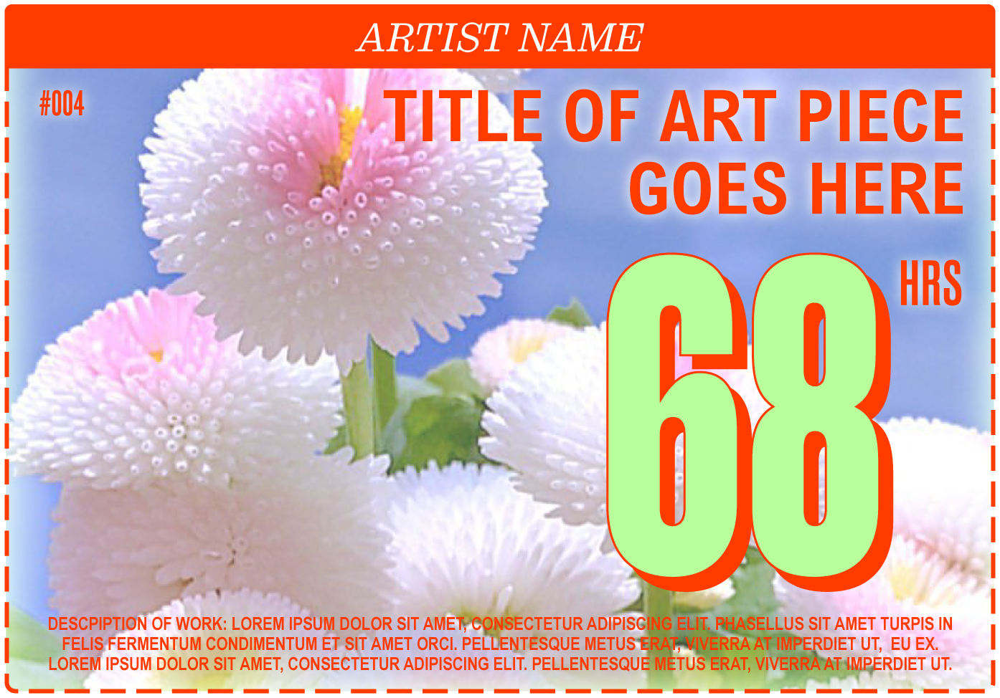
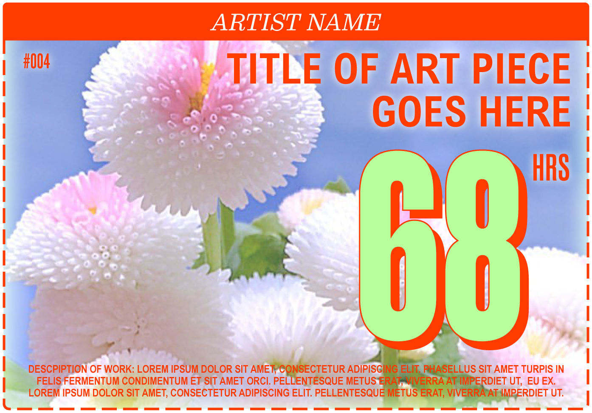
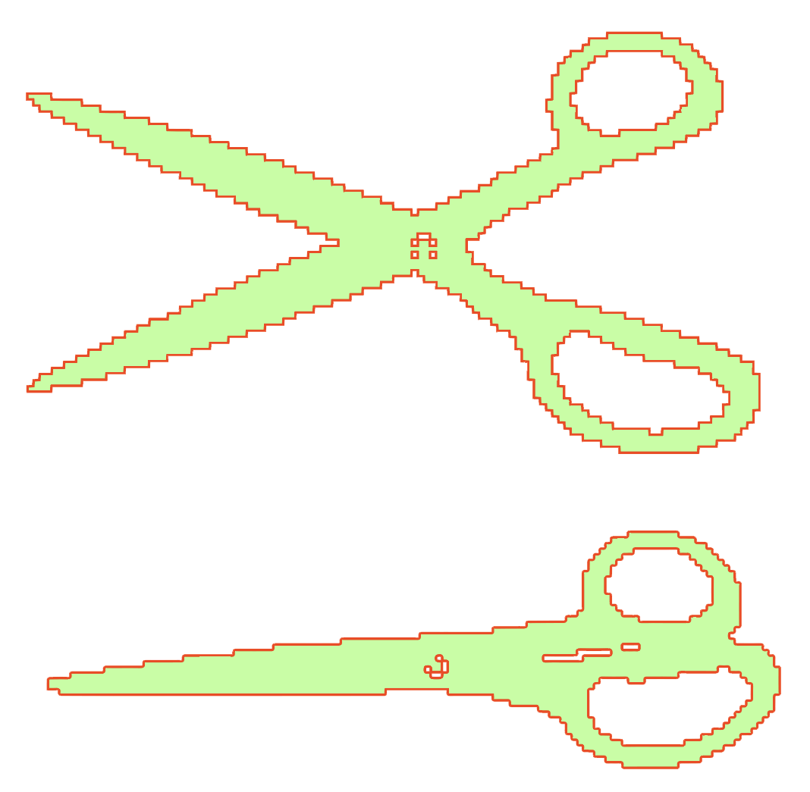
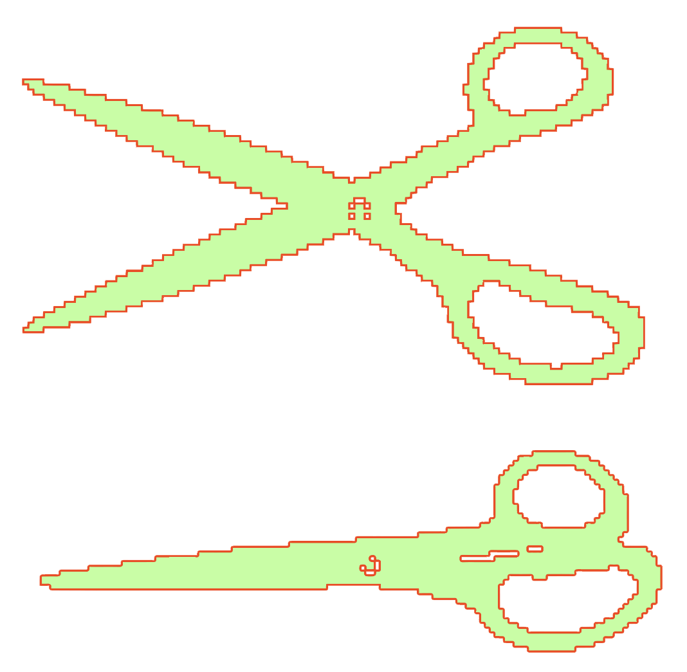

The Artists’ Broadsheet
Web Design, 2021
Created by Adrian CN Berry and Hayley Janes and funded by The University of Toronto Student Engagement Award. The Artists’ Broadsheet is a digital publication in the form of a grocery coupon broadsheet populated with virtual coupons that imagine a sustainable, thriving post-pandemic reality for artists and cultural workers. The form of a grocery store coupon broadsheet is intended to play with the absurdity of taking what artists and cultural workers offer to society and confining it to a standardized, narrowly-defined box. Each coupon contains information about the piece of art it depicts as well as the artist who has submitted said art piece to the project.
Web development and additional design by Sarah Boo.
 

 
